基于 Ripley View 项目（ripleyview.com.au）实际内容筛选 — 贴近住宅社区开发与生态保育主题
项目定位：Ripley View 是位于昆士兰 Ripley Valley 的住宅土地开发项目，由小团队精心打造，提供住宅地块，强调成熟树木、林荫街道、社区公园与家庭友好环境。
区位优势：西邻 Ipswich 成熟城区（历史底蕴、叶茂街道），紧邻 Ripley Town Centre（日常配套），东接 Springfield 规划新城（教育、医疗、商业），规划铁路连接 Brisbane CBD。
图片标注：RIPLEY VIEW, AUSTRALIA / FIG. 01 — 总体规划图
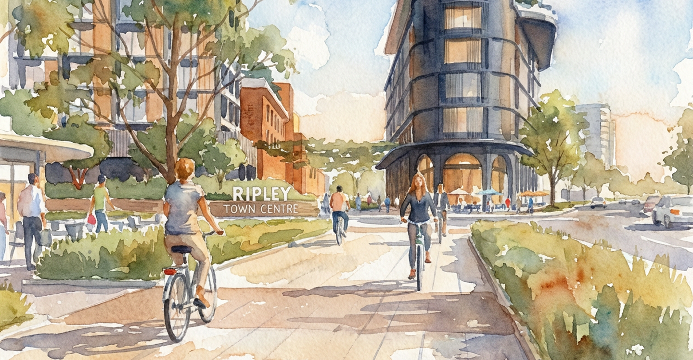
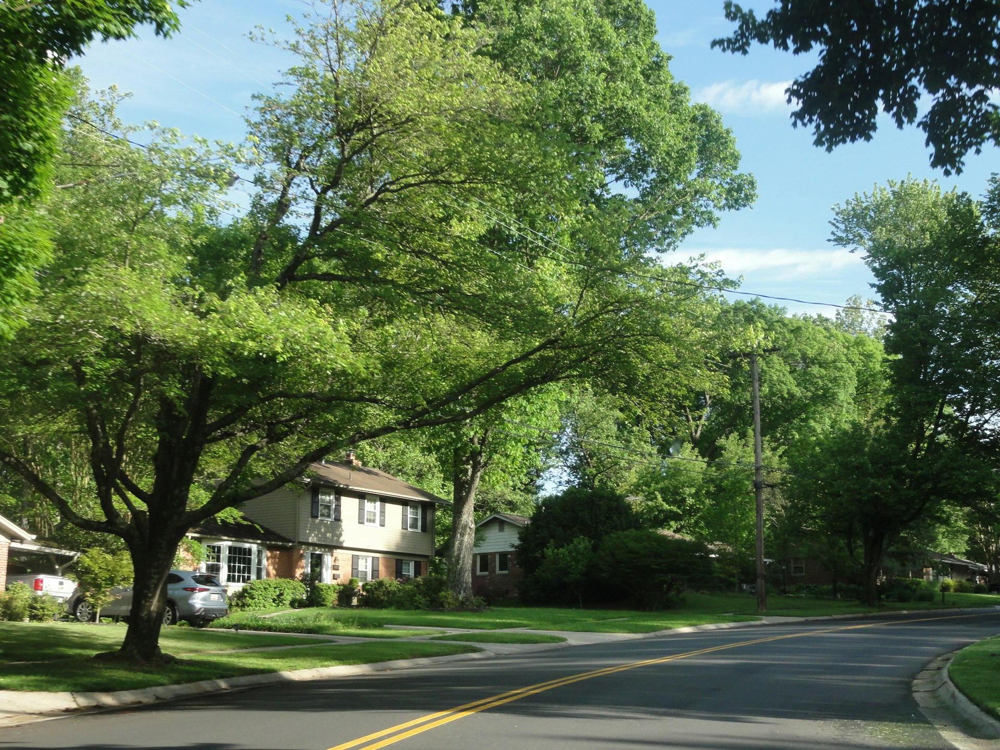
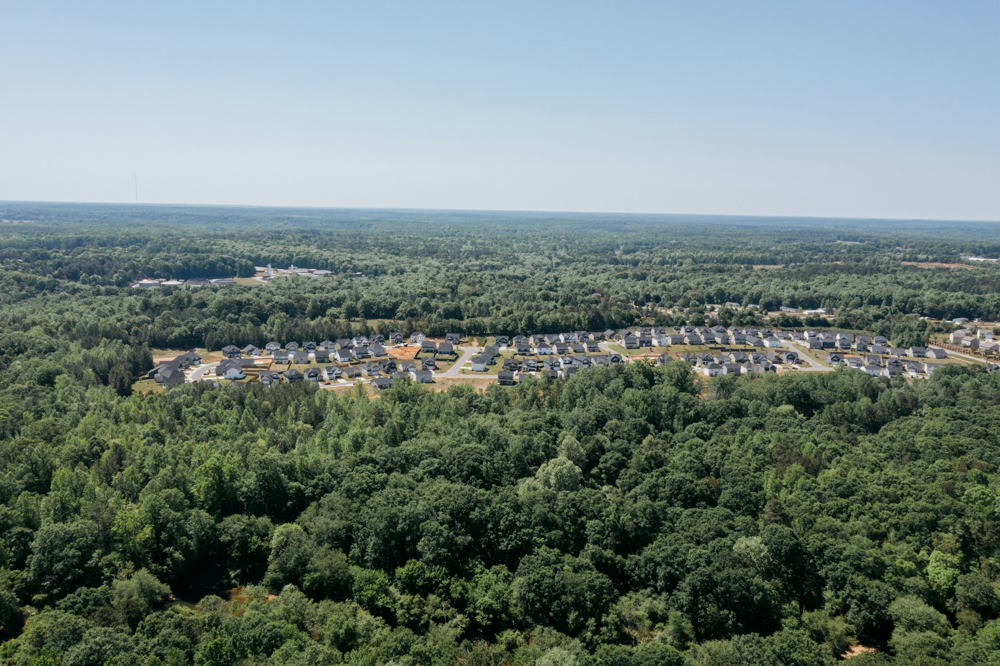
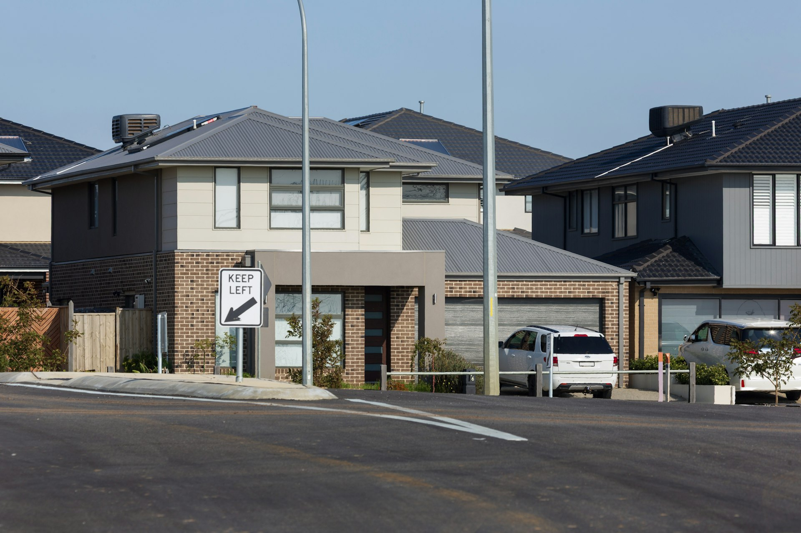
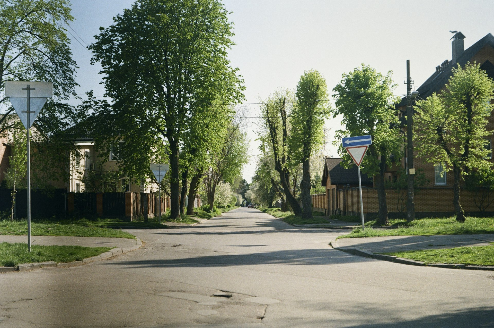
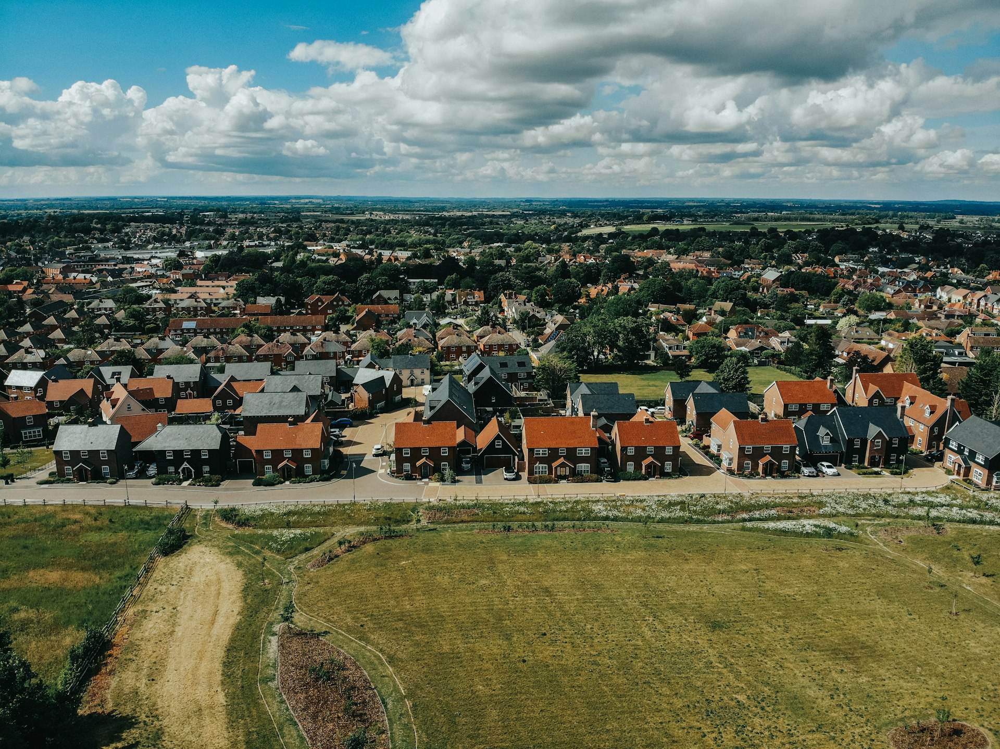
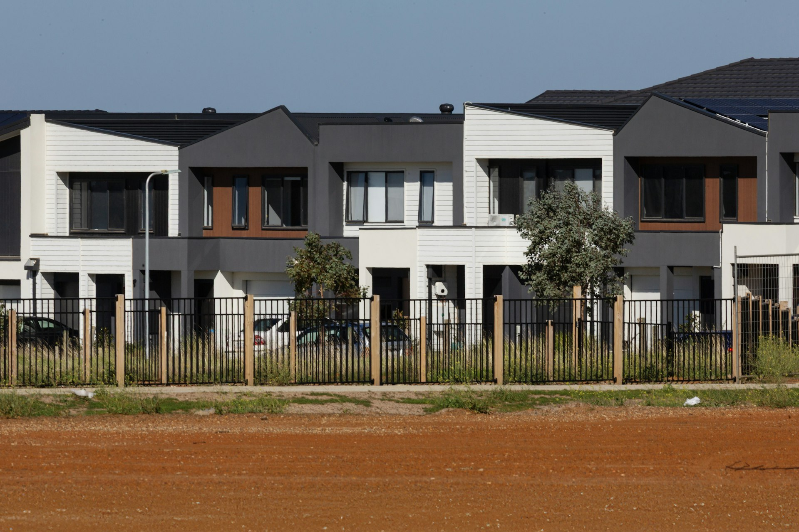
项目生态理念："成熟树木与自然环绕创造荫凉与宁静"，"景观设计衬托住宅而非与之竞争"，"街道吸引力经久不衰"。
社区环境：Ripley View 强调在住宅社区内保留自然元素 — 成熟大树、绿带走廊、公园绿地，让居民"回到一个宁静的地方"。
图片标注：RIPLEY VIEW, AUSTRALIA / FIG. 02
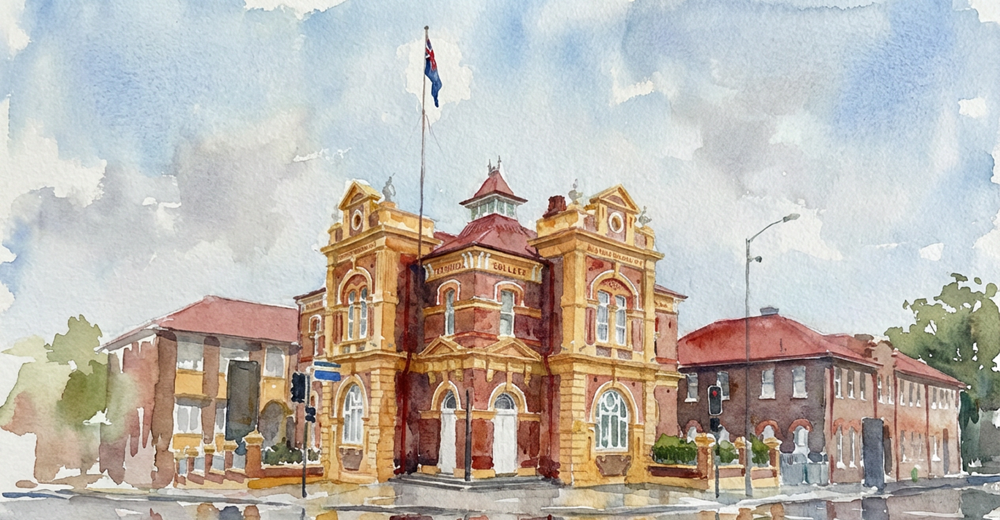
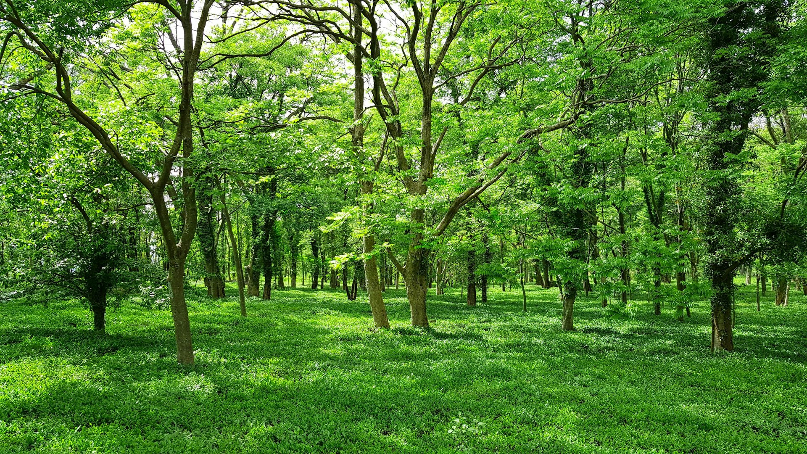
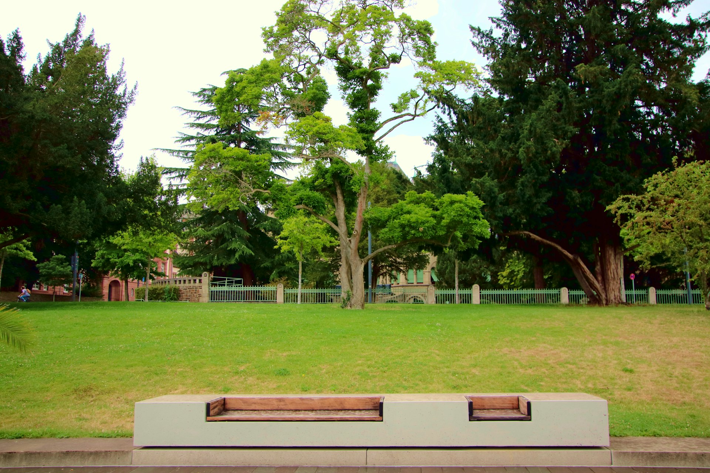
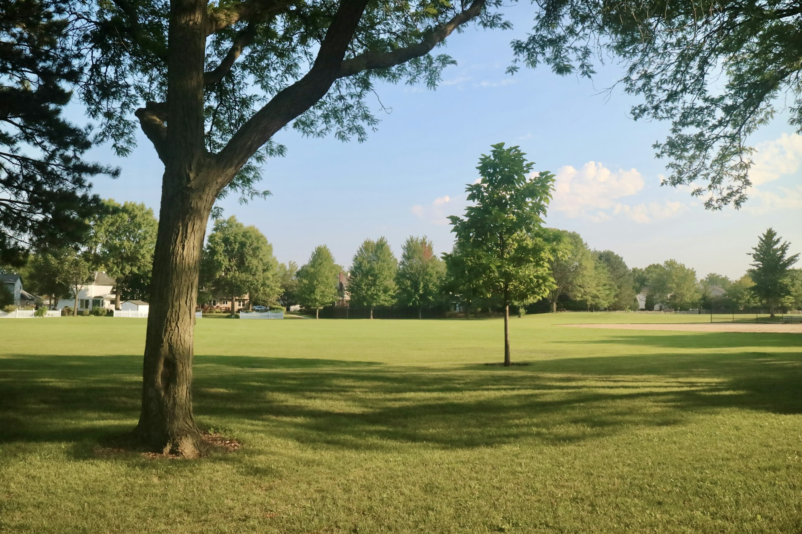
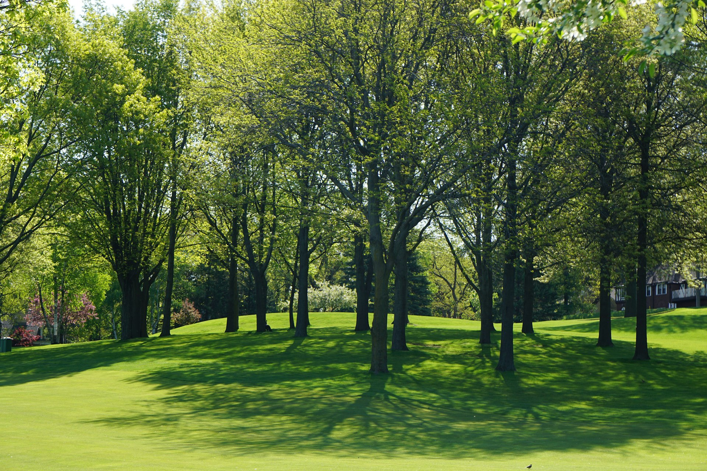
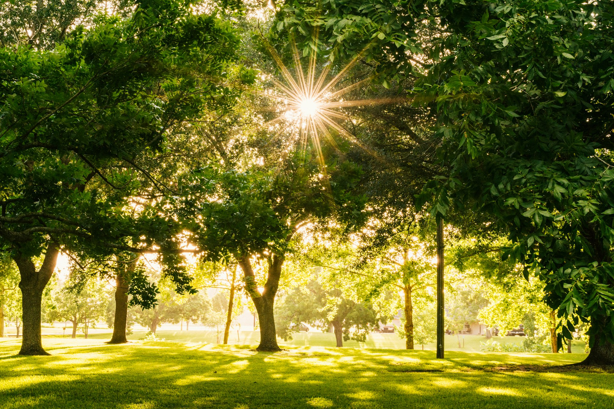
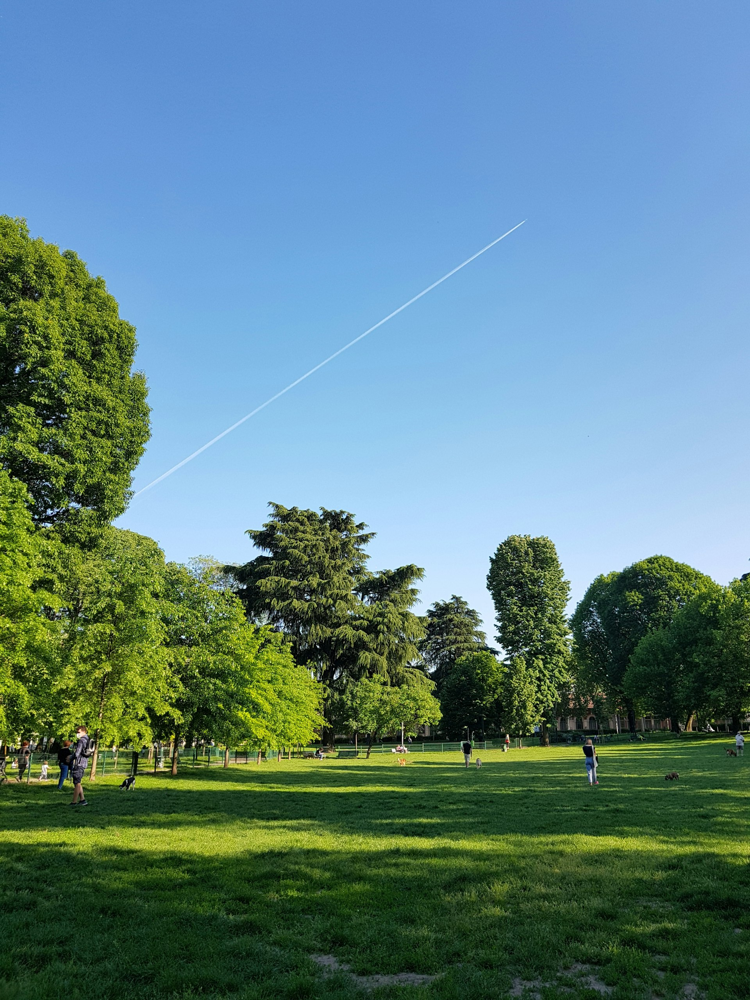